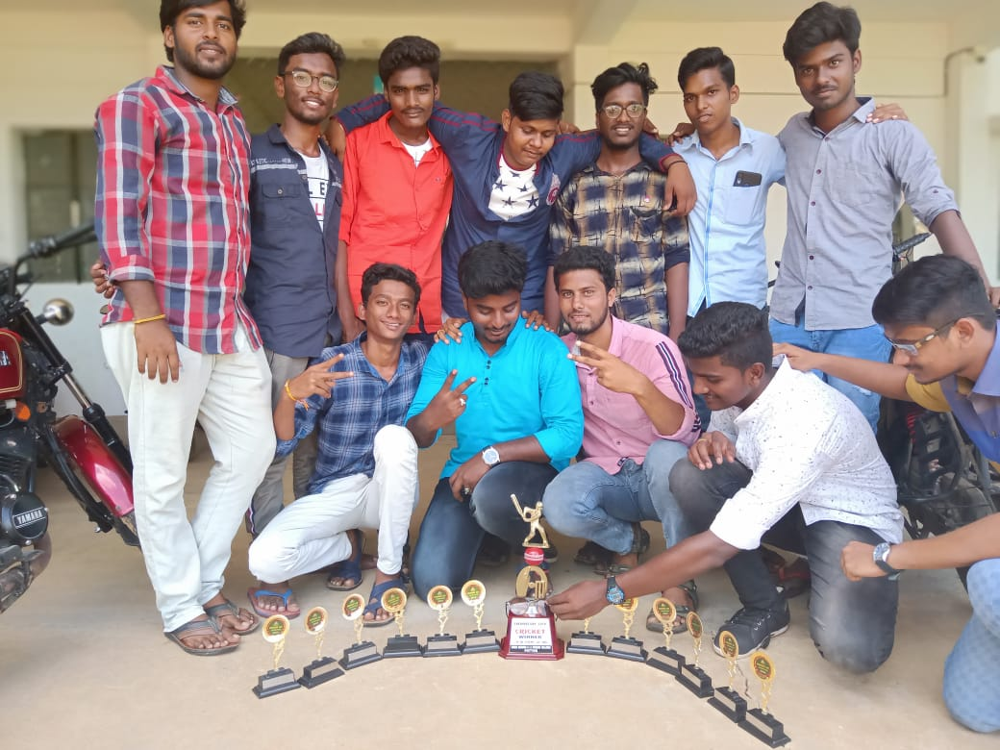
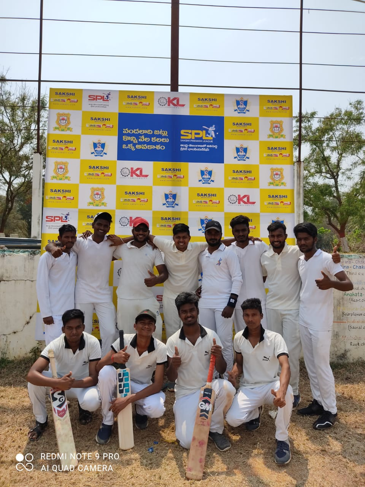

| Full Name | Sathya Thoppliee |
| Born | 24 july 1998 |
| Height | 5 ft 6 |
| Nationality | Indian |
| Role | Right Handed Batsmen,Right Arm Fast Bowler |
| Format | M | Inn | RUNS | BF | NO | AVG | SR | 50s | 30s | HS | 4s | 6s | CT | ST |
|---|---|---|---|---|---|---|---|---|---|---|---|---|---|---|
| T20 | 45 | 35 | 1867 | 1234 | 12 | 56.57 | 128.7 | 5 | 18 | 83* | 84 | 40 | 23 | 0 |
| T10 | 37 | 19 | 856 | 495 | 2 | 50.35 | 168.54 | 2 | 9 | 66 | 28 | 25 | 28 | 0 |
| FORMAT | M | INN | OVERS | RUNS | WKTS | AVG | ECO | BEST | 5Ws | 10ws |
|---|---|---|---|---|---|---|---|---|---|---|
| T20 | 45 | 35 | 164 | 885 | 56 | 24.01 | 5.4 | 5-15 | 4 | 0 |
| T10 | 37 | 19 | 70 | 413 | 42 | 22.25 | 5.9 | 3-21 | 0 | 0 |
Widely regarded as the best bastmen in nagari . Sathya Thoppliee have been impressing every since he played the YSR Cricket Tournament
With numerous awards and records to his name, combined with consistent great performances has surely put Sathya Thoppliee in the league of one of the best batsman specially in the limited over cricket.
Champions of College Cricket tournament

Group Picture with Throphy

Participants in Sakshi Premier League
{kind=link}